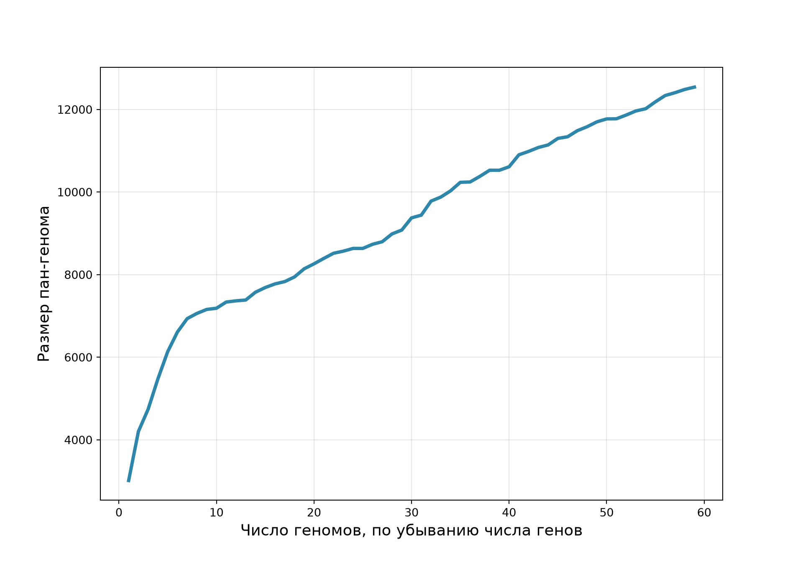
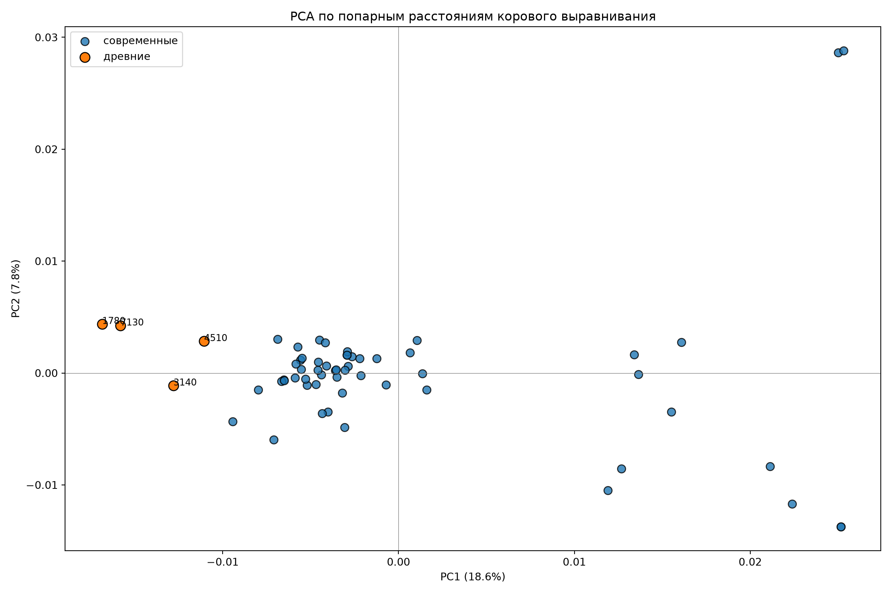

mkdir -p ../data/C_H/all_gff_no_outgroup_C_H
cp ../data/C_H/avaliable_gff_C_H/*.gff ../data/C_H/all_gff_no_outgroup_C_H/
cp ../data/C_H/new_gff_C_H/*.gff ../data/C_H/all_gff_no_outgroup_C_H/
cp ../data/C_H/BTC_consensus_gff_C_H/*.gff ../data/C_H/all_gff_no_outgroup_C_H/5 Пан-геномный анализ
В одну папку собираются 55 современных GFF и 4 древних. Roary запускается из scripts/make_core_alignment_roary.sh: белки кластеризуются при идентичности 80% (-i 80), коровым считается ген, который есть минимум у 80% штаммов (-cd 80).
mkdir -p ../data/C_H/all_core_alignment_no_outgroup_C_H
source ../scripts/make_core_alignment_roary.sh
roary ../data/C_H/all_gff_no_outgroup_C_H ../data/C_H/all_core_alignment_no_outgroup_C_H| Группа | Доля штаммов | Гены |
|---|---|---|
| Коровые (Core genes) | 80% ≤ штаммов ≤ 100% | 451 |
| Мягкое ядро (Soft core) | 79% ≤ штаммов < 80% | 85 |
| Оболочка (Shell) | 15% ≤ штаммов < 79% | 2782 |
| Облако (Cloud) | штаммов < 15% | 9223 |
| Всего | 12 541 |
Коровых генов 451 из 12 541. Пан-геном открытый: большая часть генов встречается лишь у части штаммов.
5.1 Кривая насыщения
Кривая считает, как растёт число разных генов, когда геномы добавляются по одному. Сначала идёт геном с наибольшим числом генов, дальше — по убыванию.
Code
import matplotlib.pyplot as plt
import pandas as pd
plt.figure(figsize=(10, 7))
roary = pd.read_csv('../data/C_H/all_core_alignment_no_outgroup_C_H/80_percent/gene_presence_absence.Rtab', sep = '\t', index_col=0)
# Сортируем образцы по убыванию количества генов
sample_sums = roary.sum(axis=0).sort_values(ascending=False)
# Кумулятивная сумма уникальных генов (pan-genome)
cumulative = []
seen_genes = set()
for sample in sample_sums.index:
genes = set(roary[roary[sample] == 1].index)
new_genes = genes - seen_genes
seen_genes.update(new_genes)
cumulative.append(len(seen_genes))
plt.plot(range(1, len(cumulative) + 1), cumulative,
linewidth=3, color='#2E86AB')
plt.xlabel('Число геномов, по убыванию числа генов', fontsize=14)
plt.ylabel('Размер пан-генома', fontsize=14)
plt.grid(True, alpha=0.3)
plt.savefig('../results/figures/pangenome_cumulative_CH.png', dpi=300)
plt.show()
К 59-му геному кривая всё ещё растёт: последний добавленный геном приносит ещё 57 генов. Новые штаммы продолжают расширять пан-геном.
5.2 PCA корового выравнивания
Для каждой пары образцов берём только позиции, где у обоих стоит A, C, G или T. Расстояние — доля позиций, в которых буквы различаются. Прочерк и N в долю не входят. Координаты считаем так, чтобы близкие на графике образцы были близки по этой доле.
Code
from pathlib import Path
import numpy as np
import matplotlib.pyplot as plt
aln_path = Path("../data/C_H/all_core_alignment_no_outgroup_C_H/80_percent/core_gene_alignment.aln")
sequences = {}
name = None
chunks = []
for line in aln_path.read_text().splitlines():
if line.startswith(">"):
if name:
sequences[name] = "".join(chunks)
name = line[1:].split()[0]
chunks = []
else:
chunks.append(line.strip())
sequences[name] = "".join(chunks)
names = list(sequences)
alignment = np.array([list(sequences[sample].upper()) for sample in names])
is_base = np.isin(alignment, list("ACGT"))
n_samples = len(names)
distance = np.zeros((n_samples, n_samples))
for i in range(n_samples):
for j in range(i + 1, n_samples):
both = is_base[i] & is_base[j]
n_diff = np.count_nonzero(both & (alignment[i] != alignment[j]))
distance[i, j] = distance[j, i] = n_diff / both.sum()
centering = np.eye(n_samples) - np.ones((n_samples, n_samples)) / n_samples
gram = -0.5 * centering @ (distance ** 2) @ centering
eigenvalues, eigenvectors = np.linalg.eigh(gram)
order = np.argsort(eigenvalues)[::-1]
eigenvalues = eigenvalues[order]
eigenvectors = eigenvectors[:, order]
scores = eigenvectors[:, :2] * np.sqrt(np.clip(eigenvalues[:2], 0, None))
explained = eigenvalues[:2] / eigenvalues[eigenvalues > 0].sum() * 100
ancient = [i for i, sample in enumerate(names) if sample.startswith("00000")]
modern = [i for i in range(n_samples) if i not in ancient]
plt.figure(figsize=(12, 8))
plt.scatter(scores[modern, 0], scores[modern, 1], s=60, alpha=0.8, edgecolor="k", label="современные")
plt.scatter(scores[ancient, 0], scores[ancient, 1], s=90, edgecolor="k", label="древние")
for i in ancient:
plt.annotate(names[i].split("_")[0][-4:], (scores[i, 0], scores[i, 1]), fontsize=9)
plt.xlabel(f"PC1 ({explained[0]:.1f}%)")
plt.ylabel(f"PC2 ({explained[1]:.1f}%)")
plt.title("PCA по попарным расстояниям корового выравнивания")
plt.axhline(0, color="grey", lw=0.5)
plt.axvline(0, color="grey", lw=0.5)
plt.legend()
plt.tight_layout()
out = Path("../results/figures/PCA.png")
out.parent.mkdir(parents=True, exist_ok=True)
plt.savefig(out, dpi=150)
plt.show()
Четыре древних образца лежат слева от плотного облака современных: по коровым расстояниям они не внутри основной группы. Но все же дальше всех от этого облака уходят несколько современных геномов.